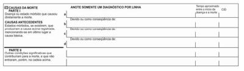
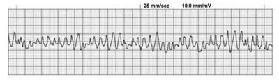
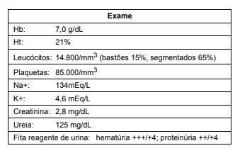
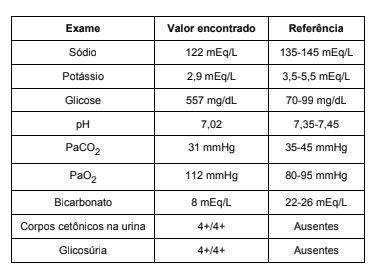
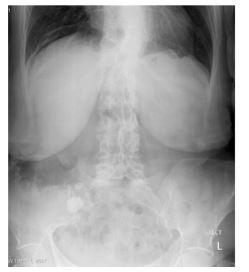
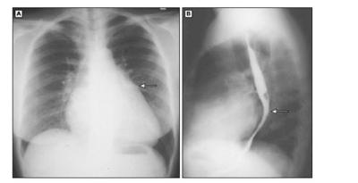

Questão 1 · Declaração de óbito DO Atestado de óbito · 4000108687Paciente do sexo masculino e 81 anos de idade, há 9 meses foi operado de câncer gástrico. Na evolução, apresentou metástases pulmonares e o quadro clínico foi progressivamente piorando sendo que, 5 dias antes do óbito, apresentou quadro broncopneumônico. O paciente era hipertenso e 3 meses antes do óbito teve uma crise hipertensiva. O diagnóstico que deve constar na “Parte I, linha c” do atestado de óbito é

A hipertensão arterial.
B crise hipertensiva.
C câncer gástrico.
D metástases pulmonares.
E broncopneumonia.
Questão 2 · Tabaco · Dependência de Tabaco · 4000108663Segundo a Organização Mundial da Saúde, para se atingir a meta “Mundo Livre do Tabaco”, a intervenção INCORRETA em Políticas de preços é:
A Distribuição: restrição das vendas a menores, máquinas de venda automática de cigarros com tecnologia para proteção da juventude.
B Políticas de preços: manutenção de taxas e impostos que incidem sobre o custo para o consumidor.
C Consumo: proibição de fumar em locais públicos, bares e locais de trabalho.
D Informação e comunicação: limites à publicidade e à promoção, à exposição de produtos e ao marketing e rotulagem obrigatória.
E Embalagem: tamanho mínimo de maços de cigarro.
Questão 3 · Rastreamento do Câncer de Próstata · 4000108642Segundo o Caderno de Atenção Primária sobre Rastreamento, do Ministério da Saúde, 2013, o nível de evidência ainda é insu ciente para fazer recomendações a favor, ou contra, da adoção do rastreamento para o câncer de próstata em homens assintomáticos com idade inferior a
A 75 anos.
B 77 anos.
C 80 anos.
D 78 anos.
E 76 anos.
Revisar: possível letra faltando em enunciado
Questão 4 · A carga de doenças no Brasil tripla carga de doenças · 4000108629A a rmação: a situação de saúde no Brasil, provocada pela transição demográ ca e epidemiológica, exige que o sistema de saúde brasileiro responda pela “tripla carga de doenças” (Frenk, 2006), NÃO se aplica à (ao):
A Aumento dos fatores das doenças crônicas (fumo, sedentarismo, inatividade física, sobrepeso e má alimentação).
B Aumento da violência e morbimortalidade por causas externas.
C Aumento da mortalidade materna e perinatal.
D Presença das doenças infecciosas e parasitárias: dengue, H1N1, malária, hanseníase, tuberculose.
E Aumento das doenças crônicas pelo envelhecimento das pessoas.
Revisar: possível letra faltando em enunciado
Questão 5 · O sistema GRADE · 4000108616Segundo o United States Preventive Services Task Force (USPSTF), a classificação do nível de evidências, obtidas de estudos de coorte ou de caso-controle bem planejados e de preferência realizados por mais de um centro, ou grupo de pesquisa, é:
A III.
B I
C II-3.
D II-1
E II-2
Questão 6 · O sistema GRADE · 4000108603O grau de recomendação é um parâmetro, com base nas evidências cientí cas, aplicado a um parecer (recomendação), que é emitido por uma determinada instituição ou sociedade. Quando o United States Preventive Services Task Force (USPSTF) se posiciona contra a oferta rotineira do serviço, mas pode ser considerada para pacientes de modo individual e há substancial a moderada evidência de que o benefício é pequeno, o grau da recomendação é:
A D
B E
C A
D C
E B
Revisar: possível letra faltando em enunciado
Questão 7 · Critérios para a implantação de um programa de rastreamento · 4000108592NÃO é característica de um programa de rastreamento:
A Melhores evidências.
B Obrigatoriedade.
C Informação.
D Acesso.
E Agilidade.
Questão 8 · Níveis de Prevenção e outros conceitos associados · 4000108576A reabilitação motora pós-acidente vascular cerebral é um tipo de prevenção
A terciária.
B quaternária.
C secundária.
D primária.
E primária e prevenção secundária.
Questão 9 · Lista Nacional de Notif icação Compulsória de doenças agravos e eventos de saúde pública · 4000108564A Portaria no 204, de 17 de fevereiro de 2016, definiu a Lista Nacional de Noti cação Compulsória de doenças, agravos e eventos de saúde pública nos serviços de saúde públicos e privados, em todo o território nacional. A doença que apresenta periodicidade de notificação imediata é:
A Leptospirose.
B Esquistossomose.
C Acidente de trabalho com exposição a material biológico.
D Leishmaniose visceral.
E Malária na região amazônica.
Questão 10 · Diagnóstico laboratorial · 4000108552Segundo o Caderno de Atenção Primária sobre Rastreamento, do Ministério da Saúde, 2013, há recomendação para rastreamento de câncer de
A pulmão.
B cavidade bucal.
C cólon e reto.
D estômago.
E pele.
Questão 11 · A mortalidade inf antil no Brasil · 4000108542Sobre mortalidade infantil no Brasil, entre 1990 e 2015, segundo o informe “Saúde Brasil 2017” do Ministério da Saúde, é INCORRETO:
A As taxas de mortalidade do período neonatal tardio e de 1 a 4 anos diminuíram, levando à redução da taxa de mortalidade em menores de 5 anos no Brasil.
B O Brasil alcançou a meta dos Objetivos de Desenvolvimento do Milênio, de redução de2/3 das taxas de mortalidade na infância (crianças menores de 5 anos).
C Houve redução da taxa de mortalidade infantil em apenas 20 das 27 unidades federativas do Brasil.
D A taxa de mortalidade infantil apresentou tendência decrescente e desacelerou no final da série.
E A maior redução da taxa de mortalidade infantil pode ser observada no período pós-neonatal e neonatal precoce.
Questão 12 · Transição Demográf ica · 4000108507Sobre o processo de transição demográfica no Brasil, entre 1950 e 2010, é INCORRETO:
A Na década de 1980, as tendências de queda da natalidade e da mortalidade foram mais acentuadas do que na década anterior.
B As transformações na população brasileira ocorreram, simultaneamente, em todas as regiões do país. Os indicadores de mortalidade e fecundidade entre 1970 e 2010 mostraram resultados regionais similares.
C As pirâmides etárias e os indicadores de estrutura etária mostram os diferentes momentos da transição demográfica nas regiões brasileiras.
D Nas décadas de 1950 e 1960, o descenso da mortalidade combinado com a manutenção de níveis elevados de natalidade e de fecundidade resultaram nas taxas de crescimento populacional mais elevadas na história do país.
E A segunda fase da transição demográfica iniciou-se em meados da década de 1960 e em 1970 os indicadores de natalidade e fecundidade detectaram mudanças, ainda que os níveis fossem muito elevados.
Questão 13 · Outros Indicadores de Relevância em Saúde Pública · 4000108487A capacidade de proporcionar informação adequada e útil para nortear as políticas e os programas, bem como a tomada de decisão é a definição que compreende:
A Compreensibilidade.
B Reprodutibilidade.
C Pertinência e relevância.
D Oportunidade.
E Mensurabilidade e viabilidade.
Questão 14 · Processo saúdedoença · 4000108471A definição de saúde como um estado de completo bem-estar físico, mental e social e não apenas a ausência de doença ou enfermidade é elaborada por:
A Departamento de Saúde dos Estados Unidos.
B Comunidade Econômica Europeia.
C Ministério do Bem-Estar Social do Brasil.
D Organização Mundial de Saúde.
E Ministério da Saúde do Brasil.
Questão 15 · Indicação · 4000108448O Ministério da Saúde do Brasil recomenda vacinação contra o sarampo nas seguintes situações, EXCETO:
A Crianças a partir dos 15 meses de idade.
B Pessoas entre 1 e 29 anos que receberam apenas uma dose.
C Crianças a partir de 12 meses.
D Todas as crianças de 6 meses a menores de 1 ano.
E Pessoas entre 30 a 59 anos de idade que não receberam nenhuma dose.
Questão 16 · Critérios de elegibilidade da OMS · 4000108421Segundo os critérios de elegibilidade do uso de contraceptivos da OMS, é correto afirmar que a categoria
A 4 inclui os métodos que devem ser usados em caráter excepcional, somente se não houver outro método disponível.
B 1 inclui os métodos que podem ser usados em qualquer circunstância.
C 5 inclui os métodos que não devem ser usados em nenhuma circunstância.
D 3 inclui os métodos que podem ser usados, porém por tempo limitado a menos de 6 meses.
E 2 inclui os métodos que podem ser usados mediante termo de consentimento assinado pelo casal.
Questão 17 · Diagnóstico da insuf iciência istmocervical · 4000108398A suspeita de insuficiência istmo cervical deve ser feita quando a paciente tem antecedente de
A infertilidade secundária.
B miomectomia histeroscópica.
C óbito fetal no 3º trimestre.
D abortamento de repetição.
E partos prematuros no 2º trimestre.
Questão 18 · Medidas gerais · Tonus atonia uterina · 4000108386Vinte minutos após parto normal e dequitação adequada, paciente primípara apresenta intenso sangramento vaginal. Providencia-se acesso venoso calibroso e infusão endovenosa de uidos e revisão do canal de parto, que não mostra lacerações. Deve-se realizar
A massagem uterina por laparotomia com sutura hemostática uterina, se necessário.
B ergotamina, ocitocina ou misoprostol por via endovenosa associados à compressão abdominovaginal do útero.
C compressão e massagem uterina, administração endovenosa de ocitocina, intramuscular de ergotamina ou retal de misoprostol.
D curetagem uterina fracionada, administração de misoprostol vaginal ou intramuscularou ocitocina intramuscular.
E ocitocina endovenosa e embolização de artérias uterinas.
Questão 19 · Síf ilis · Síf ilis · 4000108332Mulher de 22 anos de idade apresenta os seguintes resultados de testes para sí lis: − Primeiro teste treponêmico: reagente. − Segundo teste treponêmico: não reagente. − Teste não treponêmico: não reagente. É correto a rmar que se trata de amostra:
A reagente para sífilis, com cicatriz sorológica antiga.
B reagente para sífilis, com falso negativo no teste não treponêmico.
C reagente para sífilis, com possível infecção recente.
D não reagente para sífilis, com falso-positivo no primeiro teste.
E não reagente para sífilis, com cicatriz sorológica recente.
Questão 20 · Segundo período período expulsivo · 4000108317Durante o parto vaginal de feto macrossômico, o obstetra pede consentimento da parturiente para realizar episiotomia médiolateral direita, caso seja necessário, e é autorizado. Assim, se decidir realizar esse procedimento, deverá fazê-lo
A no momento em que o polo cefálico distende o períneo, em ângulo de 60º da linhamédia.
B imediatamente antes do desprendimento dos ombros, seccionado o introito vaginal.
C durante a distensão perineal, na linha média, seccionado o músculo levantador do ânus.
D imediatamente antes da inserção do fórceps de Simpson, seccionado o introitovaginal.
E quando o polo cefálico atinge a posição +2, em ângulo de 45º com a linha média.
Questão 21 · Obstetrícia · Morte f etal Óbito f etal OF · 4000108304Durante conduta expectante, em caso de óbito fetal no terceiro trimestre, o exame a ser solicitado para avaliar a complicação mais grave que pode ocorrer com a gestante é
A dopplerfluxometria venosa de membros inferiores.
B tomografia de tórax.
C ultrassonografia abdominal.
D coagulograma.
E tomografia de crânio.
Questão 22 · Interpretação · 4000108282Considere o traçado da cardiotocografia abaixo. De acordo com o traçado, é correto inferir que há

A resposta vagal do feto à hipóxia pela diminuição do fluxo interviloso decorrente dacontração uterina.
B taquicardia fetal reativa à hipóxia causada pela contração uterina.
C ausência de acelerações transitórias por hipóxia fetal grave durante o trabalho departo.
D bradicardia fetal por compressão do polo cefálico durante a contração uterina.
E bradicardia fetal por compressão localizada do cordão umbilical durante a contração uterina.
Questão 23 · Lesão intraepitelial escamosa de baixo grau · 4000108257Mulher de 32 anos de idade recebe laudo de citologia cervicovaginal com lesão intraepitelial de baixo grau. Foi solicitado que repetisse o exame em 6 meses, e o resultado foi normal. Segundo o Ministério da Saúde do Brasil, é recomendado, para essa mulher,
A repetir a citologia após 6 meses; se normal, continuar rastreio trienal.
B pesquisar HPV; se positivo, realizar colposcopia com biópsia para definir conduta.
C repetir a citologia após 1 ano; se normal, manter rastreio anual.
D realizar colposcopia com biópsia nesse momento; se normais, manter rastreio anual.
E manter controle citológico semestral por 2 anos; se normais, continuar com rastreio anual.
Questão 24 · PréEclâmpsia · 4000108242Para prevenção de pré-eclâmpsia em primigesta de 35 anos de idade, sem comorbidades, é eficaz
A a restrição importante de sódio na dieta.
B a suplementação oral com ômega 3.
C a prescrição de heparina de baixo peso molecular.
D o repouso relativo no terceiro trimestre.
E a suplementação de cálcio na dieta.
Questão 25 · Tratamento do sangramento uterino anormal agudo · 4000108217Paciente de 45 anos de idade, com sangramento genital em grande quantidade, há 3 dias. Ao exame, encontra-se descorada, porém normotensa. O exame físico mostra presença de grande quantidade de sangue e coágulos na vagina, sem lesões visíveis. A ultrassonogra a pélvica mostra útero e ovários normais. As medicações que podem melhorar o sangramento genital nesse momento são
A corticoides, anti-inflamatórios não hormonais ou contraceptivos injetáveis.
B estrogênios, anti-inflamatórios ou antifibrinolíticos.
C progesterona vaginal, análogos de GnRh, albumina endovenosa.
D análogos de GnRH, contraceptivos hormonais de progestagênio ou combinados.
E implante de progesterona, progesterona oral ou fibrinolíticos.
Questão 26 · Vulvovaginites · 4000108189Considere a imagem abaixo. O esfregaço de células vaginais mostrado na imagem revela a presença de

A HPV.
B fungos.
C Clamidia trachomatis.
D Trichomonas.
E Gardnerella vaginalis.
Questão 27 · Fisiopatologia · 4000108172A endometriose é uma afecção ginecológica de alta prevalência. São características do endométrio de mulheres com essa afecção:
A produção de estrogênio.
B maior taxa de apoptose.
C incapacidade de produzir angiogênese.
D falta de expressão da aromatase.
E resistência à progesterona.
Questão 28 · Inf ecção Urinária e Bacteriúria Assintomática na gestação ITU · 4000108155Gestante de 23 semanas, com pré-natal sem intercorrências e sem nenhuma queixa urinária, traz exame de urina com o seguinte resultado: A conduta na consulta pré-natal é

A prescrever amicacina, por via intramuscular, por 3 dias.
B prescrever cefalexina, por via oral, por 21 dias.
C prescrever ampicilina, por via oral, por 7 dias.
D repetir o exame em 7 dias.
E prescrever ceftriaxona, por via intramuscular, por 3 dias.
Questão 29 · Doença Inf lamatória Pélvica · 4000108136Mulher de 25 anos de idade vai ao pronto-socorro com dor pélvica intensa que se iniciou há 2 dias. Nega comorbidades. Utiliza, como método contraceptivo, preservativo masculino, embora faça uso irregular. Sua última menstruação ocorreu há 15 dias. Encontra-se em regular estado geral, febril (39 ºC), normotensa. Ao exame físico, observam-se sinais de irritação peritoneal em toda região pélvica. Há conteúdo vaginal aumentado, amarelado, de odor desagradável. Ao toque, não foi possível avaliar os órgãos pélvicos por intensa dor ao tentar palpar o útero. A ultrassonogra a pélvica mostra útero normal, ovário direito com imagem anecoica de 10mm e ovário esquerdo normal. Com base nesses dados, suspeita-se de
A apendicite aguda.
B endometriose pélvica.
C gravidez ectópica íntegra.
D doença inflamatória pélvica aguda.
E abscesso tubovariano.
Questão 30 · Indicação · Indicações · 4000108117Sandra é tercigesta e está grávida de 30 semanas. Seu lho Jorge, de 9 anos, foi diagnosticado com sarampo. Seu outro lho André, de 3 anos, não é vacinado e está assintomático. Ela não sabe dizer se é vacinada ou não. Como bloqueio de contactantes, indica-se
A vacina e imunoglobulina para Sandra, imunoglobulina para André e vacina para demais contactantes.
B imunoglobulina para Jorge; vacina para Sandra, André e demais contactantes.
C imunoglobulina para Sandra; vacina para André e demais contactantes.
D vacina para Sandra, André e demais contactantes.
E imunoglobulina para Sandra, André e Jorge; vacina para os demais contactantes.
Questão 31 · Atraso Puberal · 4000108068Um achado do exame físico, dentre os abaixo, que configura atraso puberal é AUSÊNCIA de
A aumento testicular aos 13 anos.
B pelos pubianos aos 14 anos.
C aumento do pênis aos 14 anos.
D pelos pubianos aos 13 anos.
E aumento testicular aos 14 anos.
Questão 32 · Lúpus Eritematoso Sistêmico Pediátrico · AIJ Artrite Idiopática Juvenil · Leucemia linf oide aguda LLA · 4000108040Joana, 3 anos e 9 meses, vem apresentando dores ósseas difusas, principalmente em MMII, iniciadas há 3 meses, que melhoram parcialmente com o uso de analgésicos comuns. A mãe de Joana refere febre baixa intermitente nesse período, cefaleia, anorexia e perda ponderal de 3 quilos. Joana está em tratamento para anemia com sulfato ferroso há 2 meses. Exame físico: irritabilidade, fácies de sofrimento, di culdade para deambular pela dor, hipocorada +/4+, adenomegalias cervicais, axilares e inguinais móveis, broelásticas, não coalescentes, medindo de 0,5 a 1 cm de diâmetro, fígado palpável a 5 cm do RCD, baço a 4 cm do RCE, petéquias em MMII e sopro sistólico +/4+ pancardíaco, sem irradiação. A principal hipótese diagnóstica, dentre as abaixo, é
A febre reumática.
B doença de Still.
C dores de crescimento.
D artrite reumatoide juvenil.
E lúpus eritematoso sistêmico.
Questão 33 · Diagnóstico · 4000107998João, 5 anos, é levado à UBS devido a dor para andar. Mãe relata que acabou de se curar de uma gripe há mais ou menos uma semana. Nega quedas ou trauma. Exame físico geral sem alterações. Exame ortopédico mostrou boa mobilidade do joelho direito com rotação interna limitada por dor no quadril no mesmo lado. Exames laboratoriais: leucócitos normais, discreta elevação da VHS. Radiografias de perna e quadril: normais. A principal hipótese diagnóstica, dentre as abaixo, é
A escorregamento epifisário femural.
B Síndrome de Legg-Calvè-Perthes.
C sinovite transitória.
D doença de Osgood-Schlatter.
E displasia do desenvolvimento do quadril.
Questão 34 · Quadro clínico da def iciência de G6PD · 4000107988Fernanda, 4 anos, é levada à Unidade de Pronto Atendimento por sua mãe, que relata que sua lha está amarelada e cansa- se com facilidade. Há três dias iniciou tratamento para infecção urinária com ácido nalidíxico. Ao exame físico, Fernanda encontra-se descorada ++/4+, ictérica +/4, principalmente em face e tronco. Ausculta cardíaca e pulmonar normais. FC: 120 bpm, FR: 44 irpm, SatO₂: 96%, Abdome: ácido, ruídos hidroaéreos presentes, fígado no rebordo costal direito e baço palpável a 1 cm do rebordo costal esquerdo. Exames laboratoriais: Hb: 6,5 g/dL, Ht: 19,5%, reticulócitos: 9%. Dentre as abaixo, a principal hipótese diagnóstica para esse caso é
A anemia ferropriva.
B anemia falciforme.
C esferocitose.
D deficiência de G6PD.
E deficiência de piruvato quinase.
Questão 35 · Diagnóstico · 4000107833Recém-nascido de 39 semanas, parto cesáreo por iteratividade materna, adequado para a idade gestacional, Apgar 9/10, bolsa rota no ato, líquido amniótico claro, apresenta taquipneia com retrações intercostais logo após o parto. A ausculta pulmonar é normal e a radiogra a de tórax evidenciou aumento da trama vascular pulmonar à direita. Dentre as hipóteses diagnósticas abaixo, a principal é
A taquipneia transitória do recém-nascido.
B síndrome da aspiração meconial.
C síndrome do desconforto agudo.
D pneumonia do recém-nascido.
E hipertensão pulmonar.
Questão 36 · Doença de Graves · 4000107813Recém-nascido filho de mãe com doença de Graves não tratada apresentará
A macrocefalia.
B restrição do crescimento intrauterino.
C pós-datismo.
D sonolência.
E bócio eutireoideo.
Questão 37 · Diagnóstico · Cirurgia · 4000107779Durante o acompanhamento da gestante, foi notado o sinal da ""dupla bolha"" na ultrassonogra a pré-natal, que foi confirmado na radiogra a de abdome do recém-nascido realizada logo após o nascimento. Dentre os diagnósticos abaixo, o mais provável é:
A atresia de esôfago sem fístula.
B atresia duodenal.
C estenose de piloro.
D divertículo de Meckel.
E doença de Hirschprung.
Questão 38 · Pediatria · Erros inatos do metabolismo · 4000107761Recém-nascido de termo é levado pela mãe em consulta médica devido à queixa de amarelecimento da pele e dos olhos, vômitos, irritabilidade e di culdade para se alimentar. O resultado do teste do pezinho expandido veio alterado, indicando provável galactosemia. Dentre as condutas abaixo, a melhor conduta é
A suplementar o aleitamento materno com multivitaminas.
B iniciar fototerapia em biliberço.
C descontinuar aleitamento e iniciar leite de soja.
D solicitar ultrassonografia abdominal.
E pedir parecer da endocrinologia pediátrica.
Questão 39 · Emergências Pediátricas Parada Cardiorrespiratória PCR e Arritmias na Emergência · Causas de PCR · 4000107753Um paciente internado na enfermaria, com 8 anos de vida e peso de 25 kg, subitamente perde a consciência. A enfermeira estava próxima, detectou a ausência de pulso e iniciou as compressões torácicas, enquanto a criança era monitorada. Ao chegar, o pediatra solicitou a interrupção das compressões para ver o seguinte ritmo: Algumas causas reversíveis que podem ser tratadas durante a reanimação cardiopulmonar são:

A Acidose respiratória e Hipomagnesemia.
B Trauma e alcalose metabólica.
C Hipotermia e hiperlactatemia.
D Hipoglicemia e hipercalemia.
E Hipomagnesemia e febre.
Questão 40 · Síndrome HemolíticoUrêmica SHU · Nef rologia · 4000106437Pré-escolar, três anos, sexo masculino, é levado por seus pais ao pronto-socorro. Os pais notaram que seu lho está menos ativo e referem que há três dias o menino apresentou quadro de febre (38,5 ºC), vômitos e diarreia. Há um dia está urinando menos, apesar de boa aceitação hídrica. Exame físico: Regular estado geral, hipocorado 3+/4+, hidratado, acianótico, anictérico, eupneico, irritado e com dor à palpação abdominal. FC: 150 bpm, FR: 38 irpm, PA: 105 × 60 mmHg. Exames laboratoriais: Dentre as hipóteses diagnósticas abaixo, a mais provável é

A púrpura de Henoch-Schönlein.
B púrpura trombocitopênica trombótica.
C glomerulonefrite difusa aguda.
D insuficiência renal crônica.
E síndrome hemolítico-urêmica.
Questão 41 · Síndrome do Bebê Chacoalhado · 4000106434Um bebê de 9 meses é levado ao pronto-socorro pelos pais, com quadro de irritabilidade há três semanas, sonolência e choro intenso intermitente no mesmo período e alguns vômitos ocasionais. Os pais não sabem dizer se houve algum fator desencadeante e negam quaisquer outros sintomas associados. Nesse quadro clínico, dentre as alterações abaixo, espera- se encontrar a seguinte:
A Anemia normocítica e normocrômica.
B Amilase e lipase duas vezes maior que o valor de referência.
C Tomografia de crânio com hematoma extradural extenso.
D Fundo de olho com hemorragias perirretinianas.
E Trauma hepático à ultrassonografia de abdome.
Questão 42 · Tratamento · 4000106428Um menino de 15 meses é levado ao pronto atendimento com quadro de febre há 2 dias (máximo de 38 °C), coriza, tosse, inapetência e irritabilidade. Ao exame físico, está em regular estado geral, afebril, com FR: 32 ipm, FC: 144 bpm, ausculta pulmonar com alguns estertores grossos difusos, oroscopia sem alterações e otoscopia com hiperemia e opacidade bilateral. Dentre as abaixo, a melhor conduta é:
A Prescrever amoxicilina via oral, na dose de 100 mg/kg/dia por 5 dias.
B Prescrever amoxicilina com clavulanato de potássio, na dose de 90 mg/kg/dia por 7 a10 dias.
C Prescrever claritomicina oral na dose de 15-20 mg/kg/dia, por 7 a 10 dias.
D Prescrever amoxicilina via oral, na dose de 50 mg/kg/dia por 7 a 14 dias.
E Orientar analgésicos, antitérmicos, hidratação e repouso, com retorno em 48 horas.
Questão 43 · Acidose metabólica com ânion gap aumentado · Nef rologia · Cetoacidose · 4000106424Uma adolescente de 13 anos apresenta poliúria, polifagia, perda de peso a despeito da ingestão nutricional adequada e fadiga há 3 semanas, com piora há 1 dia. No prontosocorro, foi monitorada, mantida em ar ambiente e colhidos diversos exames, listados abaixo. O tipo de acidemia acima observado costuma vir acompanhado de

A Ânion-gap baixo e hipercloremia.
B Ânion-gap normal e normocloremia.
C Ânion-gap normal e hipocloremia.
D Ânion-gap aumentado e hipercloremia.
E Ânion-gap aumentado e hipocloremia.
Questão 44 · Síndrome Colinérgica · 4000106418Uma criança de 3 anos, previamente saudável, é levada ao pronto-socorro com queixa de sonolência. Pai acha que a criança ingeriu algum dos remédios que tem em casa, mas não sabe a rmar o nome de nenhum deles. Ao exame físico, a criança estava com Glasgow: 12, miose puntiforme, sialorreia, bradicárdia (FC: 62 bpm), pulsos periféricos rmes, sibilos expiratórios difusos e pele avermelhada. Dentre as alternativas abaixo, a medicação mais indicada para o quadro descrito é:
A Atropina, 0,02 mg/kg, intravenosa.
B Naloxone, 0,5 mg/kg, intramuscular.
C Flumazenil, 0,01 mg/kg, intravenoso.
D Adrenalina, 0,1 mg/kg, intravenosa.
E Diazepam, 0,2 mg/kg, intravenoso.
Questão 45 · Cutâneo Subcutâneo e Mucosa · Tratamento · Epinef rina · 4000106412Uma criança de 7 anos começou a ter prurido intenso após ingestão de frutos do mar, acompanhado de placas eritemato edematosas em tronco e abdome e estridor laríngeo leve. A criança é saudável e já tinha comido frutos do mar anteriormente, sem nenhuma intercorrência. Deve-se
A afastar a possibilidade de anafilaxia, tendo em vista a ausência de histórico prévio, e administrar 1 mg/kg de difenidramina e 1 mg/kg de metilprednisolona intravenosos.
B afastar a possibilidade de anafilaxia, tendo em vista a ausência de histórico prévio, pensar em reação anafilactoide e administrar, imediatamente, 1 mg/kg de difenidramina e 1 mg/kg de ranitidina intravenosos.
C afastar a possibilidade de anafilaxia, tendo em vista a ausência de histórico prévio, e administrar inicialmente uma nebulização com 5 mL de adrenalina pura.
D considerar possibilidade de anafilaxia, tendo em vista o comprometimento respiratório e cutâneo, e administrar 0,01 mg/kg de adrenalina intramuscular.
E considerar a possibilidade de anafilaxia, tendo em vista o comprometimento respiratório e cutâneo, e administrar 1 mg/kg de difenidramina e 1 mg/kg de metilprednisolona intravenosos.
Questão 46 · Condutas · 4000106409Um motociclista de 24 anos, vítima de colisão com auto em alta velocidade, chega ao pronto-socorro imobilizado em prancha rígida, com colar cervical, e lençol contendo a pelve. Está em ventilação espontânea, com máscara de oxigênio, tendo saturação de 95%. A via aérea está pérvia e a ausculta pulmonar é normal. Recebeu já 1 litro de soro siológico aquecido. Pulso: 140 bpm, rítmico; PA: 60 × 40 mmHg; tempo de enchimento capilar: 5 segundos, frequência respiratória: 18 irpm; Glasgow: 14; pupilas isofotorreagentes. A pelve é instável e tem deformidade na coxa direita. Os pulsos periféricos são muito fracos, liformes, mas estão presentes. O toque retal não tem alterações. O FAST (focused assessment with sonography for trauma) é negativo. Conduta, neste momento:
A Laparotomia exploradora.
B Tamponamento intraperitoneal.
C Transferência imediata para centro de trauma, para embolização arterial pélvica.
D Tamponamento pélvico extraperitoneal.
E Tomografia de corpo inteiro.
Questão 47 · Tratamento do Adenocarcinoma Gástrico · 4000106400Um homem de 30 anos está internado na Unidade de Terapia Intensiva por quadro de anemia, desnutrição e queda do estado geral, secundário a adenocarcinoma gástrico com células em anel de sinete, com metástase hepática. Há uma semana, seu KPS (Karnofsky Performance Status) foi avaliado em 80%. Evolui com hematêmese, sendo que a endoscopia mostra sangramento difuso, em porejamento, da neoplasia. Conduta:
A Gastrectomia de urgência, sem linfadenectomia.
B Radioterapia hemostática.
C Terapia com argônio, por endoscopia.
D Instilação de adrenalina, por via endoscópica.
E Suporte clínico apenas, sem nenhuma medida invasiva.
Questão 48 · Tratamento · 4000106395Um homem de 65 anos, obeso e tabagista, é internado por diverticulite aguda Hinchey I, com abscesso de 7 cm. Sabe ter doença diverticular difusa, caracterizada já por colonoscopia. Já teve crise de diverticulite aguda há 1 ano. É feito o diagnóstico de fecalúria. Esse paciente tem indicação cirúrgica por
A estar já no segundo episódio de diverticulite aguda.
B ser tabagista e relativamente jovem.
C causa do tamanho do abscesso pericólico.
D causa da fístula colovesical.
E ter óstios diverticulares por todo o cólon (diverticulose pancólica).
Questão 49 · Nutrição em Cirurgia e Recuperação PósOperatória · 4000106372Um paciente de 32 anos, sem comorbidades, está no primeiro pós-operatório de correção de hérnia inguinal, à Lichtenstein, por hérnia encarcerada, sem sofrimento intestinal. Refere apenas dor leve em incisão. Foi operado sob raquianestesia. Não houve intercorrências. Conduta em relação à dieta:
A Aguardar a eliminação de gases, para iniciar dieta leve.
B Dieta geral.
C Dieta líquida.
D Dieta pastosa.
E Jejum por 24 horas; depois, dieta leve.
Questão 50 · Abdome Agudo Perf urativo · Cirurgia · 4000106366Um paciente de 45 anos procurou o pronto-socorro de hospital terciário, que tem todos os recursos diagnósticos e terapêuticos disponíveis, com dor abdominal há aproximadamente 24 horas, tipo pontada. A dor inicialmente era em região infraumbilical e de pequena intensidade. Tornou-se progressivamente mais intensa, passando a irradiarse para o tórax e para o ombro direito. Negava outros fatores concomitantes. Estava em bom estado geral, mas tinha alteração do pulso, que tinha frequência de 120 bpm. O abdome era doloroso difusamente à palpação profunda, com sinal de Jobert presente, mas sem sinais de irritação peritoneal. Negava antecedentes médicos relevantes. Negava laparotomia, tabagismo, uso de medicações ou drogas ilícitas. Referia apenas ingesta alcoólica habitual (cerca de 20 g de álcool etílico/dia). Dos exames de laboratório solicitados, apenas o leucograma estava alterado: 17.580 leucócitos/mm³, sem desvio à esquerda. As radiogra as, ilustradas a seguir, mostraram pneumoperitônio de grandes proporções. Foi indicada laparotomia exploradora. Na abertura da cavidade abdominal (incisão mediana), identi cou-se saída de grande quantidade de gás, logo após a incisão do peritônio. Não se achou contaminação, nem líquido entérico. No inventário da cavidade, procedeu-se à inspeção e palpação de todos os órgãos, incluindo diafragma, estômago (foi explorada a retrocavidade dos epíplons), duodeno (após manobra de Kocher), intestino delgado e grosso (após descolamento de ambas as goteiras parietocólicas). Nenhuma alteração foi encontrada. Por m, através da sonda nasogástrica, foi insu ado ar no estômago e não ocorreu escape aéreo. Foi ainda injetado azul de metileno, que também não extravasou para a cavidade peritoneal. Com relação à conduta adotada, é correto afirmar:

A A conduta foi correta, uma vez que os riscos inerentes ao procedimento não suplantam os riscos de se deixar possível causa de pneumoperitônio sem tratamento.
B Deveria ter sido submetido antes a colonoscopia, para afastar a presença de cistos no cólon.
C O paciente não deveria ter sido operado, pois seu pneumoperitônio é claramente idiopático.
D Deveria ter sido submetido antes a endoscopia digestiva alta, pois a principal hipótese diagnóstica era úlcera perfurada.
E A tomografia de abdome com contraste poderia dispensar a intervenção cirúrgica.
Questão 51 · Trauma Abdominal Fechado · Cirurgia · 4000106351A utilização da ultrassonografia na sala de atendimento inicial ao traumatizado tem sido cada vez mais frequente. Pode limitar ou contraindicar sua utilização:
A Dispor somente de transdutor de baixa frequência.
B Fraturas múltiplas de arcos costais.
C Instabilidade hemodinâmica.
D Ferimento penetrante de tórax.
E Presença de enfisema extenso de subcutâneo.
Questão 52 · Inf ecções relacionadas à assistência à saúde IRAS · 4000106346Em relação às infecções hospitalares, é correto afirmar:
A A lavagem das mãos antes e após a manipulação dos pacientes é a melhor maneira dese prevenir infecções cruzadas nas enfermarias cirúrgicas.
B A realimentação precoce do paciente cirúrgico é uma das medidas que aumentam a incidência de infecção pós- operatória, por predispor a pneumonia aspirativa.
C A antibioticoterapia profilática deve ser mantida por pelo menos 48 horas, no pós-operatório de cirurgia eletiva, para conseguir reduzir a incidência de infecções hospitalares.
D A posição elevada do paciente entre 30 e 45 graus não interfere na incidência de pneumonia associada a ventilação mecânica.
E O
Questão 53 · Interpretação dos marcadores sorológicos · Etiologia · Esquistossomose · 4000106337Uma senhora de 57 anos, natural da Bahia, apresentou vômitos de aspecto sanguinolento, sem instabilidade hemodinâmica. Foi submetida a endoscopia digestiva alta, diagnosticando-se varizes esofágicas. A paciente nega etilismo. Refere emagrecimento recente, além de dores abdominais recorrentes, já há alguns anos, e aumento do volume abdominal. A respeito das hipóteses diagnósticas para o caso dessa paciente, é correto afirmar:
A A causa mais provável da hipertensão portal da paciente é trombose de porta.
B A presença de ascite sugere fortemente o diagnóstico de síndrome de Budd-Chiari.
C Se a paciente tiver esplenomegalia e plaquetopenia, o diagnóstico mais provável é cirrose de Laënnec.
D A investigação etiológica da doença poderá envolver exame parasitológico de fezes, testes imunológicos e biópsia hepática.
E Apesar de a paciente ser de zona endêmica de esquistossomose, o quadro apresentado é mais compatível com cirrose de etiologia viral.
Questão 54 · Traumatismo Urológico · Cirurgia · 4000106328Uma mulher de 30 anos, passageira do banco da frente, foi vítima de colisão frontal de carro. Estava usando cinto de segurança. Chega ao pronto-socorro em condições de estabilidade ventilatória e circulatória, com Glasgow 15. O FAST (focused assessment with sonography for trauma) é negativo. Tem pequena fratura do ramo isquiático direito e discreta disjunção da sín se púbica, vistas na radiogra a de pelve. Ao urinar espontaneamente, foi observada hematúria macroscópica. A cistogra a mostrou ruptura extraperitoneal da bexiga, sem envolvimento do trígono vesical. Não se diagnosticou nenhuma outra lesão. Tratamento, em condições ideais:
A Antibioticoterapia e observação.
B Cistostomia por punção.
C Sondagem vesical com Foley, por, pelo menos, 10 dias.
D Laparotomia para reparo primário da lesão de bexiga.
E Laparoscopia para reparo da lesão vesical.
Questão 55 · Abdome Agudo Perf urativo · Cirurgia · 4000106321Uma senhora de 75 anos, com hipertensão arterial controlada, diabetes e artrose de quadril, é levada pela lha ao pronto- socorro, com queixa de dor abdominal e vômitos há um dia. Faz uso de aspirina, 100 mg por dia. Nunca foi operada. Está em regular estado geral, normotensa, eupneica, afebril, anictérica e desidratada. Frequência cardíaca: 60 bpm. O exame clínico do tórax não revela alterações. O abdome não tem cicatrizes e é doloroso difusamente, mesmo à palpação super cial. Está tenso e tem sinais de irritação peritoneal difusa, mas mais evidente no epigástrio. O toque retal não tem alterações. A lha traz ultrassonogra a de abdome, feita no dia anterior, em outro serviço, cujo laudo sugere o diagnóstico de colecistite aguda calculosa, e a radiogra a simples de abdome, mostrada abaixo. Obtido acesso venoso, é iniciada hidratação e analgesia. A gasometria arterial não mostra alterações significativas. Hemograma: hemoglobina: 9,8 g/dL, leucócitos: 15.000/mm³, sem desvio à esquerda. Creatinina: 2,16 mg/dL, ureia: 90 mg/dL, potássio: 3,5 mEq/L e sódio normal. Lactato sérico: 35 mEq/L e PCR: 187 mg/L. O médico que está atendendo a paciente solicita tomogra a, mas o radiologista diz que, devido à insu ciência renal, seria melhor fazer o exame sem contraste, que não acrescentaria muito para o diagnóstico. Conduta, além de iniciar o tratamento com antibiótico e a reposição volêmica

A nova ultrassonografia.
B tratamento percutâneo, por radiologia intervencionista.
C intervenção cirúrgica de urgência.
D tomografia, mesmo sem contraste.
E hidratação vigorosa e tomografia com contraste, depois.
Questão 56 · Reparo Aberto Livre de Tensão · Cirurgia · 4000106310A técnica de Lichtenstein é o padrão-ouro no tratamento cirúrgico das hérnias inguinais, tendo taxas baixas de recidiva e ampla aplicabilidade. Principal causa de recidiva da hérnia no doente submetido a essa técnica:
A A abertura na tela para passagem do cordão espermático.
B A existência de hérnia crural, não identificada no momento da operação.
C Não utilização da tela.
D Uso de tela de material absorvível.
E Defeito técnico na fixação da tela no púbis, medialmente.
Questão 57 · Abdome Agudo Inf lamatório · Cirurgia · 4000106295Um homem de 50 anos, com antecedentes de hemo lia A leve, desde os 15 anos de idade, e cirrose hepática por vírus C, vai ao pronto-socorro com queixa de dor no hipocôndrio direito, contínua, de forte intensidade, crescente, há 2 dias. Nega febre, mas refere calafrios, muito mal-estar e anorexia. Está em regular estado geral, desidratado 3/4+, apático e prostrado. Sinais vitais: frequência cardíaca: 135 bpm; PA: 110 × 70 mmHg; frequência respiratória: 32 irpm. Saturação de oxigênio: 89%, em ar ambiente. Tempo de enchimento capilar: 4 segundos. O murmúrio vesicular está presente bilateralmente, mas reduzido nas bases. As bulhas cardíacas são taquicárdicas, mas regulares e normofonéticas. O abdome está globoso e distendido, sendo doloroso difusamente à palpação, mas sem irritação peritoneal. Os ruídos hidroaéreos estão presentes e não aumentados. Não tem edema de membros inferiores. Exames laboratoriais: leucócitos: 28.380/mm³, sem desvio à esquerda; plaquetas: 173.000/mm³; albumina sérica: 2,8 g/dL; PCR: 246 mg/L; INR: 1,58; R: 1,73; Na mEq/L; Ureia: 134 mg/dL; Creati- nina: 1,68 mg/dL. Foi colhida cultura de urina e de sangue periférico. Primeiro passo no tratamento desse doente:
A Hemodiálise.
B Intubação traqueal.
C Laparotomia exploradora.
D Laparoscopia diagnóstica e, eventualmente, terapêutica.
E Passagem de cateter venoso central e de sonda vesical, hidratação e antibiótico IV e reposição de fator VIII.
Questão 58 · Conduta nos Aneurismas de Aorta Abdominal · Cirurgia · 4000106284Tratamento Cirúrgico do Aneurisma de Aorta Abdominal e Complicações Pósoperatórias Um homem de 65 anos, tabagista de 1 maço de cigarros ao dia há 40 anos, sem DPOC (doença pulmonar obstrutiva crônica) ou outras comorbidades, é portador de aneurisma fusiforme da aorta abdominal infrarrenal, assintomático, descoberto em exame de rotina. Está indicada correção cirúrgica do aneurisma desse paciente, se o aneurisma tiver diâmetro a partir de
A 5,5 cm.
B 6,0 cm.
C 4,0 cm.
D 4,5 cm.
E 5,0 cm.
Questão 59 · Abdome Agudo Vascular · Cirurgia · 4000106278Causa mais comum de isquemia aguda do intestino:
A Dissecção aórtica.
B Tromboembolia arterial.
C Arterite de Takayasu.
D Displasia fibromuscular.
E Ligadura vascular iatrogênica.
Questão 60 · Abdome Agudo Obstrutivo · Câncer Colônico Complicado · Cirurgia · 4000106271A cirurgia de Hartmann é possivelmente a mais realizada na urgência, no tratamento do doente com neoplasia obstrutiva de cólon esquerdo. Principal motivo para a adoção desse procedimento, no contexto indicado:
A Lesão perfurada com peritonite.
B Idade avançada.
C Prevenção da morbidade relacionada a possível deiscência de anastomose ereoperacão, com o consequente retardo no início do tratamento oncológico complementar.
D Desnutrição, principalmente se associada a hipoalbuminemia.
E Existência de doença neoplásica peritoneal, caracterizada por implantes esparsos noepíplon e/ou metástases hepáticas.
Questão 61 · Artrite reumatoide AR · Tratamento · 4000106265É uma droga que não é considerada como modi cadora da artrite reumatoide, no entanto é geralmente empregada no tratamento inicial da doença por promover alívio mais rápido do quadro doloroso. Trata-se de
A metotrexate.
B sulfasalazina.
C prednisona.
D leflunomida.
E hidroxicloroquina.
Questão 62 · Intoxicação por Carbamatos e Organof osf orados · 4000106260Uma mulher de 22 anos, trabalhadora da zona rural, é levada ao pronto-socorro por fraqueza, náusea, vômitos, salivação e lacrimejamento excessivos, sudorese excessiva e tosse com secreção clara abundante. Está consciente e orientada com letargia leve; pulso rítmico de 50 bpm, PA: 110 × 68 mmHg, sibilos respiratórios difusos e secreção brônquica copiosa; com movimentos musculares involuntários − fasciculações − na face e tronco. Herbicida por aspersão foi aplicado recentemente no seu local de trabalho. O tratamento imediato consiste nas medidas básicas de manutenção e na administração de
A alfatocoferol.
B epinefrina.
C n-acetilcisteína.
D hidroxicobalamina.
E atropina.
Questão 63 · Abstinência de Álcool · 4000106249O tratamento da agitação psicomotora que acomete a maioria dos pacientes com abstinência alcoólica deve ser feito preferencialmente com
A benzodiazepínico.
B fenitoína.
C zolpiden.
D fenobarbital.
E quetiapina.
Questão 64 · Tratamento da hipotensão ortostática e disautonomia · 4000106242Em várias situações clínicas, a perda de líquidos determina redução do volume do líquido extracelular, o que pode prejudicar a perfusão tecidual. Uma forma de identi car a hipovolemia é a constatação da presença de hipotensão postural, que consiste em uma queda da pressão arterial sistólica e diastólica quando, após estar deitado por 5 minutos, se assume a posição ortostática, respectivamente, de pelo menos
A 10 e 20 mmHg.
B 10 ou 5 mmHg.
C 20 ou 10 mmHg.
D 10 e 10 mmHg.
E 20 ou 20 mmHg.
Questão 65 · Exames complementares · 4000106232Considere as imagens abaixo. As alterações indicadas pelas setas correspondem, mais provavelmente, a um paciente portador de

A estenose mitral.
B hipertensão pulmonar primária.
C aneurisma de ventrículo esquerdo.
D estenose tricúspide.
E insuficiência aórtica.
Questão 66 · Hipertensão gestacional · Tratamento f armacológico · 4000106220Uma mulher na 26ª semana de gestação é diagnosticada com hipertensão gestacional. Decide-se pelo tratamento medica- mentoso. Recomenda-se evitar o uso de drogas sabidamente capazes de causar lesão no feto, como
A nifedipina de liberação estendida.
B labetalol.
C hidroclorotiazida.
D alfa-metildopa.
E enalapril.
Questão 67 · Critérios Diagnósticos · 4000106210São típicos da cefaleia em salva (Cluster):
A Início gradual, agravado pela atividade física rotineira.
B Unilateral em 70%, bifrontal ou global em 30% dos casos.
C Duração de 30 minutos a 7 dias.
D Lacrimejamento ipsilateral e rinorreia.
E Paciente prefere ficar em ambiente escuro e silencioso.
Questão 68 · Tratamento · 4000106201As infestações intestinais por Entamoeba histolytica devem ser tratadas
A somente nos casos sintomáticos.
B apenas se houver invasão tecidual.
C em gestantes, apenas no terceiro trimestre.
D somente em pacientes imunodeprimidos.
E sempre.
Questão 69 · Drogas antidiabéticas não insulina · 4000106190Foram estudados os efeitos de diversas drogas, como monoterapia, na redução do nível de hemoglobina glicada. Dos abaixo, os dois medicamentos com maior eficiência (redução de 1% a 2%) são:
A Empagliflozina e metformina.
B Metformina e gliclazida.
C Sitagliptina e gliclazida.
D Liraglutida e sitagliptina.
E Liraglutida e pioglitazona.
Questão 70 · Diagnóstico etiológico da tireotoxicose · 4000106182Considere 2 grupos de pacientes com hipertireoidismo: Grupo I: captação de radioiodo normal ou aumentada. Grupo II: captação de radioiodo praticamente ausente. São exemplos desses grupos, respectivamente:
A Adenoma hipofisário produtor de TSH e hipertireoidismo factício.
B Adenoma tóxico e doença trofoblástica.
C Tireoidite pós-parto e tireoidite linfocítica.
D Tireoidite de De Quervain e amiodarona.
E Câncer folicular metastático e doença de Graves.
Questão 71 · Doença por lesões mínimas · Glomeruloesclerose f ocal e segmentar · Nef rologia · 4000106172Considere os pacientes 1, 2 e 3 que apresentam proteinúria variando de 4,5 a 6,2 gramas/dia: Paciente 1: Portador de linfoma de Hodgkin com uso frequente de antiinflamatórios não esteroidais. Paciente 2: Índice de massa corpórea de 41 kg/m² e com nefropatia de refluxo. Paciente 3: Portador do vírus B da hepatite e com carcinomatose. Glomeruloesclerose segmentar e focal, glomerulonefrite membranosa e nefropatia de lesões mínimas associam-se, respectivamente, aos pacientes
A 2, 1 e 3.
B 3, 1 e 2.
C 2, 3 e 1.
D 1, 2 e 3.
E 3, 2 e 1.
Questão 72 · Síndrome de Lise Tumoral SLT · Síndrome de lise tumoral SLT · 4000106161Homem de 25 anos, ao ser submetido a quimioterapia para tratamento de linfoma de Burkitt, desenvolveu quadro típico de síndrome de lise tumoral, caracterizado por náusea, letargia, convulsão,
A Hipocalemia, hipofosfatemia e hipercalcemia.
B Hipercalemia, hipofosfatemia e hipocalcemia.
C Hipercalemia, hiperfosfatemia e hipocalcemia.
D Hipercalemia, hipofosfatemia e hipercalcemia.
E Hipocalemia, hiperfosfatemia e hipocalcemia.
Questão 73 · Pica · 4000106154Pagofagia é tratada habitualmente com
A sertralina.
B eritropoetina.
C folato.
D ferro.
E cobalamina.
Questão 74 · Quadro Clínico · 4000106137A encefalopatia de Wernicke é disfunção diencefálica e mesencefálica caracterizada pela tríade
A convulsão, alucinações e demência.
B coreia, depressão e miclonia.
C apraxia de marcha, bexiga neurogênica e ciatalgia.
D rigidez, bradicinesia e tremor.
E confusão, ataxia e oftalmoplegia.
Questão 75 · Diagnóstico · Púrpura de HenochSchöinleinVasculite por IgA · 4000106128Vasculite por IgA ou púrpura de HenochSchönlein PHS Homem de 20 anos apresenta quadro de poliartrite, dor abdominal aguda, púrpuras palpáveis nas pernas e hematúria micros- cópica. Hemograma, coagulograma, creatinina e complemento sérico são normais. O diagnóstico mais provável é Respostas: 1 12 23 34 45 56 67
A doença de Goodpasture.
B granulomatose de Wegener.
C síndrome de Reiter.
D lúpus eritematoso sistêmico.
E vasculite por IgA.